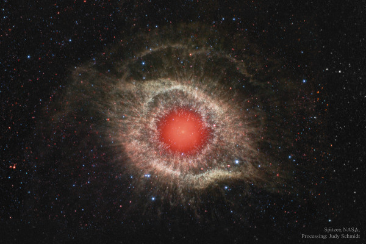
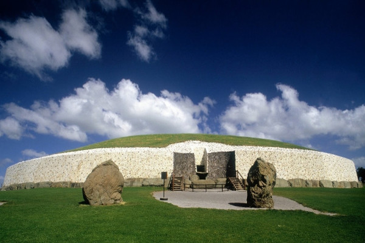

Interesting Places/Things
These are a list of some of the natural wonders and interesting places around the world that I have seen so far.
- Great Pyramid of Giza
- Mausoleum at Halicarnassus
- Newgrange
- Dun Angeus
- Philopappos
Wonders of the World
| Classic Wonders | Modern Wonders |
|---|---|
| Collosus of Rhodes | Great Wall of China |
| Great Pyramid of Giza | Christ the Redeemer in Rio de Janeiro |
| Hanging Gardens of Babylon | Machu Picchu in Peru |
| Lighthouse of Alexandria | Chichen Itza |
| Mausoleum at Halicarnassus | Roman Colosseum |
| Statue of Zeus at Olympia | Taj Mahal in India |
| Temple of Artemis at Ephesus | Petra in Jordan |

The Helix Nebula, also known as The Helix, NGC 7293, is a large planetary nebula (PN) located in the constellation Aquarius. Discovered by Karl Ludwig Harding, probably before 1824, this object is one of the closest to the Earth of all the bright planetary nebulae. The estimated distance is about 215 parsecs (700 light-years). The Helix Nebula has sometimes been referred to as the "Eye of God" in pop culture, as well as the "Eye of Sauron".
The Helix Nebula

The Northern Lights

Newgrange is a Stone Age (Neolithic) monument in the Boyne Valley, County Meath, it is the jewel in the crown of Ireland's Ancient East. Newgrange was constructed about 5,200 years ago (3,200 B.C.) which makes it older than Stonehenge and the Great Pyramids of Giza. Newgrange is a large circular mound 85 meters (93 yards) in diameter and 13.5 meters (15 yards) high with a 19 meter (21 yard) stone passageway and chambers inside. The mound is ringed by 97 large kerbstones, some of which are engraved with symbols called megalithic art.